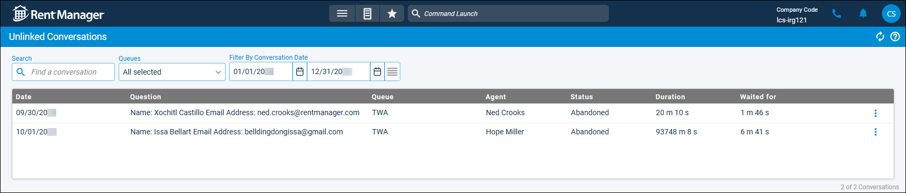

Source: https://rmxhelp.rentmanager.com/Topics/Express/CSH/Web-Chat-Unlinked-Conversations.htm
Unlinked Conversations (Web Chat) (Page)
Web Chat conversations that are not linked to any accounts in Rent Manager are retained on this page. Conversations that display in this list can be viewed and, if applicable, linked to existing or new accounts.
Related Privileges
| Group | Privilege | Column |
|---|---|---|
| Web Chat | Queues | View |
| Manage Unlinked Conversations | Enabled |
For more information, refer to Control User Access.
To access unlinked Web Chat conversations, go to  arrow_forward Communication arrow_forward Web Chat arrow_forward Unlinked Conversations.
arrow_forward Communication arrow_forward Web Chat arrow_forward Unlinked Conversations.

Filter Information
The following filters are available on this page:
| Filters | Descriptions |
|---|---|
|
Search |
Enter the desired search criteria to display results with a Name that matches the search criteria. |
|
Queues |
Select each queue for which to display associated conversations. To quickly select or deselect all options in the list, check or uncheck the box in the section header. To clear the selection(s), click clear. |
|
Filter By Conversation Date |
Enter a From and/or To date to filter the list to display only conversations that took place in that date range. Click |
Column Descriptions
The following columns are available on this page:
| Column | Description |
|---|---|
|
Date |
The date on which the conversation took place. |
|
Question |
The questions established for the queue on the Manage Queues page and the answers provided by the recipient. For more information, refer to Manage Queues (Web Chat) (Page). |
|
Queue |
The queue from which the conversation originated. |
|
Agent |
The agent who answered the Web Chat request and spoke to the visitor. If the chat was transferred, the name of the last agent to speak in the chat displays. |
|
Status |
A status of Completed or Abandoned displays depending on how the conversation closed. If a conversation has a status of Completed, the Rent Manager user clicked Completed at the conclusion of the chat. If a conversation has a status of Abandoned, the chat timed out after twenty minutes of inactivity. |
|
Duration |
The length of time the conversation took from when the agent answered the Web Chat request to when the chat was closed, measured in minutes (m) and seconds (s). |
|
Waited for |
The length of time the visitor waited for the Web Chat request to be answered by an agent, measured in minutes (m) and seconds (s). |